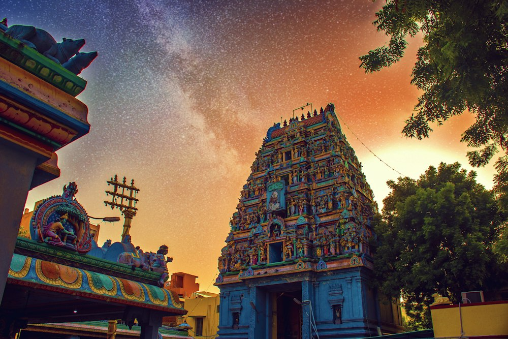

Making space for meaningful traditions.
PoojaConnect is built around a timeless belief: arranging a sacred ceremony should feel calm, clear, authentic, and deeply respectful.

Honouring the wisdom of tradition
Families often rely on fragmented word of mouth to find a priest, understand ritual requirements, and coordinate schedules. PoojaConnect brings those steps together in one trusted, serene space.
We empower informed choices through verified profiles, transparent samagri packages, and profound respect for regional diversity across India.
Purity in every mantra and offering
Every ritual performed through PoojaConnect strictly follows established Vedic scriptures. From the sacred fire havan kund to the pronunciation of mantras, we preserve the spiritual essence of Indian culture.
- Verified Gurukula Scholars: Certified through respected Veda Patashalas.
- Pure Organic Samagri: 100% natural herbs, pure cow ghee, and fresh flowers.
- Inter-generational Clarity: Priests explain the significance so the entire family connects.

Guided by Esteemed Vedic Scholars & Acharyas
Our advisory council ensures every ceremony adheres strictly to traditional shastras.
Veda Patashala Affiliations
Collaborating with over 18 heritage Gurukulams across Varanasi, Kanchipuram, Tirupati, and Sringeri to vet scholars.
Panchangam & Muhurtham Bureau
Senior astrologers cross-referencing regional ephemeris and solar-lunar calendars for pinpoint auspicious timings.
Devotee Welfare Guarantee
Zero commercial exploitation, fixed transparent dakshina, and a devoted coordinator dedicated to your ceremony.
Principles guiding every ceremony
Reverence & Respect
Honouring individual family traditions, kuladevata customs, and regional practices.
Purity & Clarity
Clear service breakdowns, upfront dakshina, and pure samagri without confusion.
Personalized Care
Keeping the entire journey peaceful, punctual, warm, and spiritually uplifting.
Experience the peace of a well-arranged ceremony
Connect with our coordinators to discuss your family's upcoming occasion.